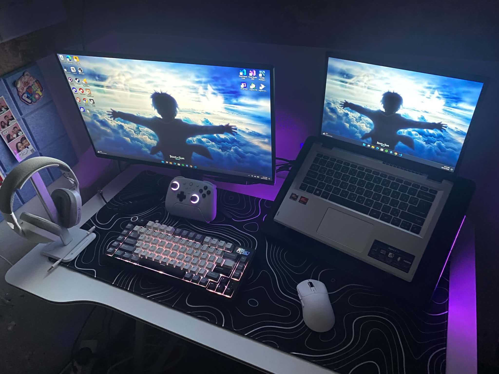
What i'm into
Below are things im interested in and passionate about in both building my career and just enjoying life. My personal interests include my hobbies and favorite things that i enjoy doing or just interested at. While my career-related interests mainly focus on the skills that i learned and still developing in pursuing to be a software engineer.
Personal
Fitness
Since i was young, i really love eating. However, it affected my physical appearance and overall wellness. I was moving slow so i decided to try working out. I didn't knew what i was doing back then so i lock-in and go to them gym and learn from others. I stayed disciplined until i saw results and its impact to my wellness.
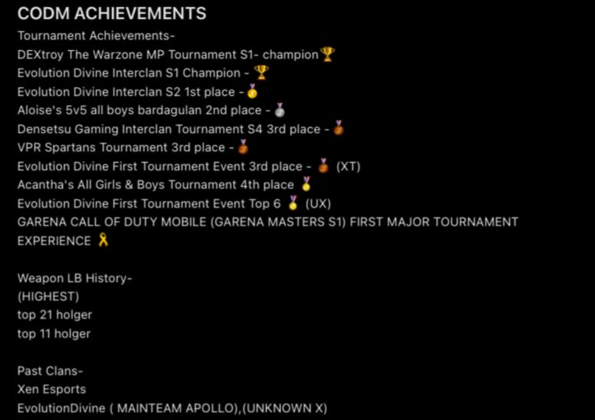
Esports
I started playing a call of duty game in 2019, i kept on grinding for a very long period. And as i noticed seeing results such as competing against professionals players, i started joining tournaments. Although i thought this was my passion, i realized that there's more to life than just games.
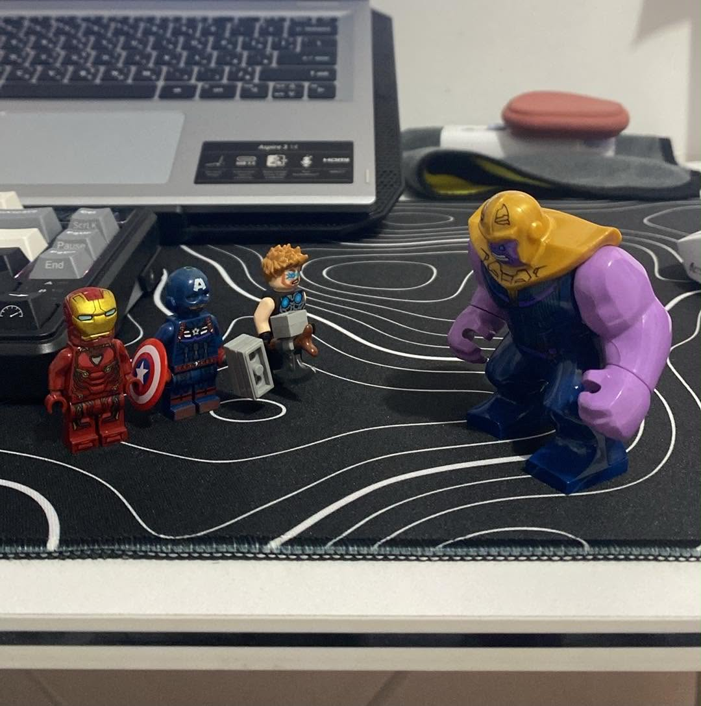
Lego
When i was at a very young age, my mother and i used to buy some toys at the local store in our municipality then i saw these fake lego minifigures and really got addicted to them. It gotten to a point that i wanted to buy more but ofcourse, my mother was budgeting. Starting today i can finally buy my own lego original sets.
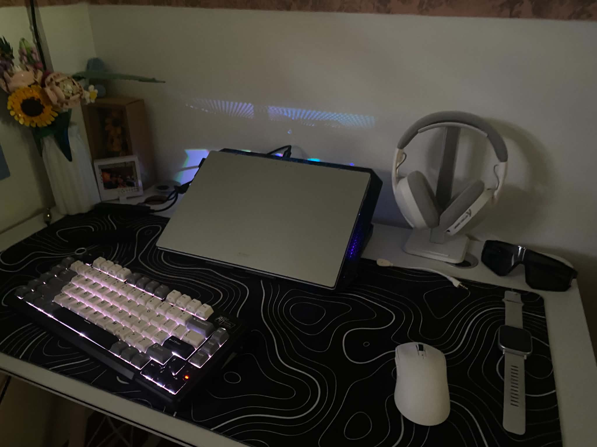
Technologies
As i grew from being a teenager to an adult, i started shifting from lego to technologies such as a laptop or computer, especially with an aesthetic setup. Especially now, as im pursuing in the same field with technology evolving to what we have been expecting before.
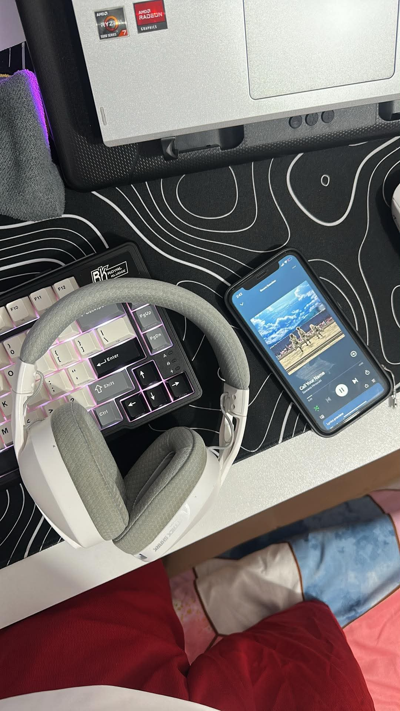
Music
For me, music is everyone's safe place and im sure im one of them. Music just isolates me to reality for a brief moment and just enjoy it while it last.
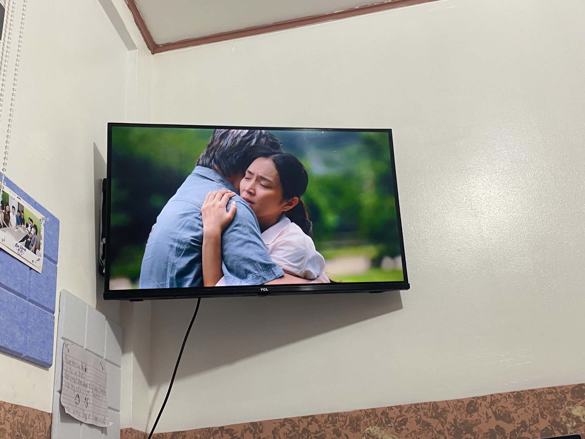
Movie
Movies are just entertaining as they are, but the moment that i found my favorite genre and stories, that's what made me interested into watching them.
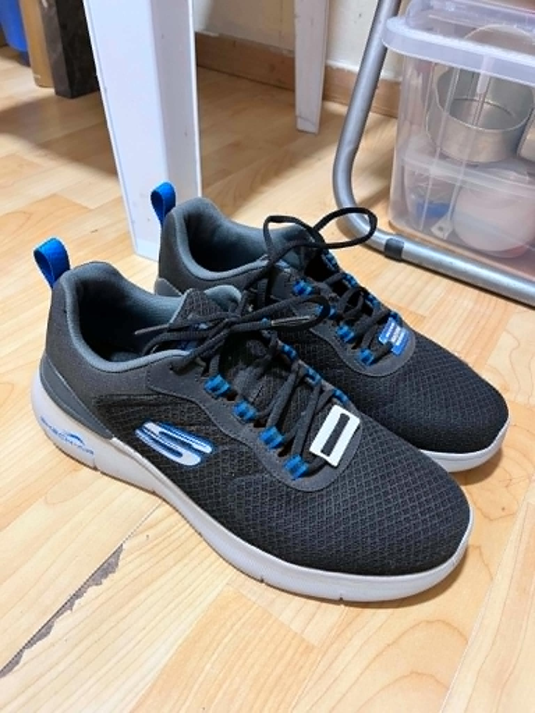
Sneakers
My mother is always gifting me shoes and sneakers and as i mature enough, i find them interesting to aesthetically wear and collect as they not only looks good but visually pairs up to my outfit personality.
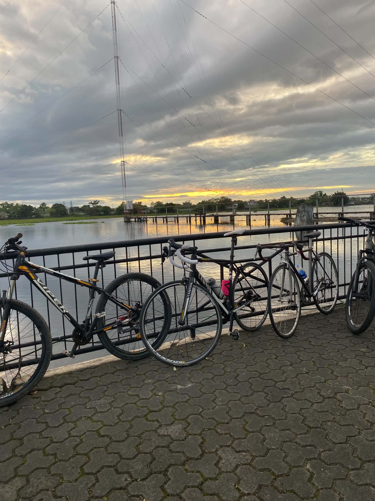
Vehicle
When i watched the first and second fast and furious movie, i got addicted to the culture. But not only that, but to the concept of riding any type of vehicle such as what i have now, a mountain bike. I usually used them for transportation when going to the gym, but occasionally when hanging out for a ride with my friends.
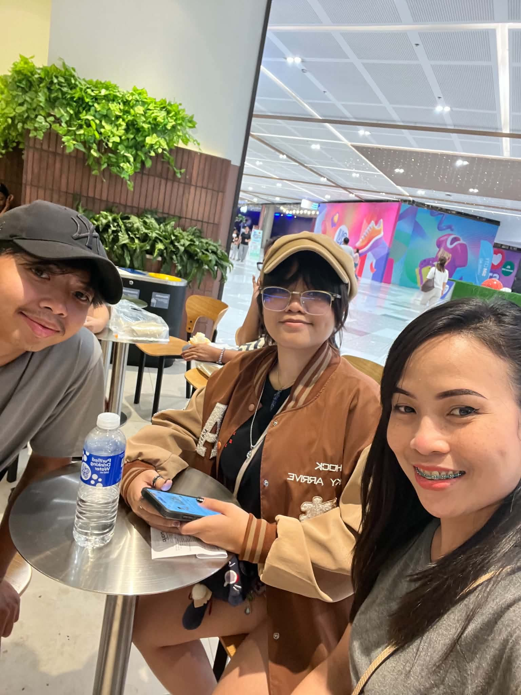
Coffee
I've been with coffee since first year of college as it helped me in grinding my studies. Not only that, but as well hanging out with my family for a coffee hangout.
Career
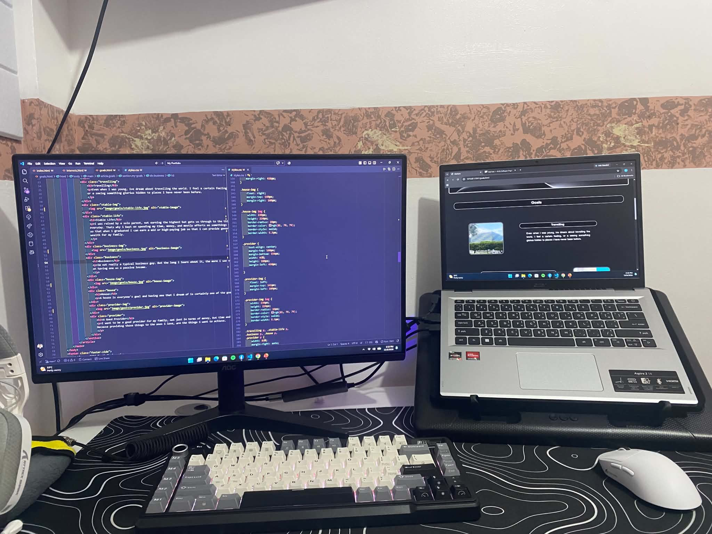
Software
When i first encountered our programming subject in first year of college, i was really overwhelmed because i didn't knew anything about the fundamentals. Then when our final project were assigned, i started learning and found the beauty within it. All about following an algorithm until i use them in certain projects. And until now, i still kept on learning.
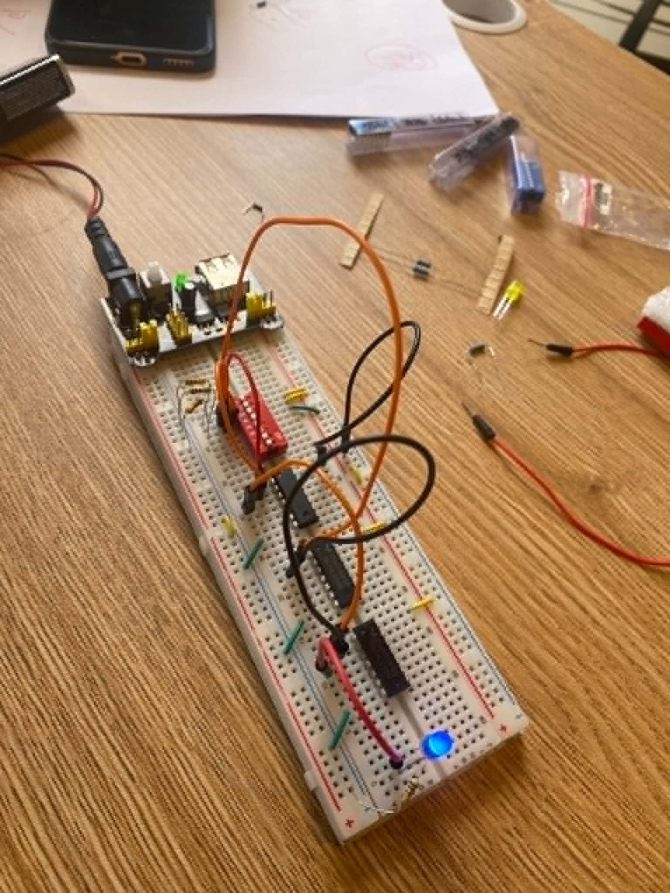
Hardware
I got interested in hardware configurations when we were performing them in one of our subjects. Although they are a bit pricy, i stil find it enjoying in configurating them.
Cybersecurity
Since im into software, i tried learning a bit about cybersecurity, specially my friend convinced me to. And as i was learning about it, i did fint it interesting but really hard. But nothing is easy, that's why i joined a cybersecurity certification course offered by our professor.
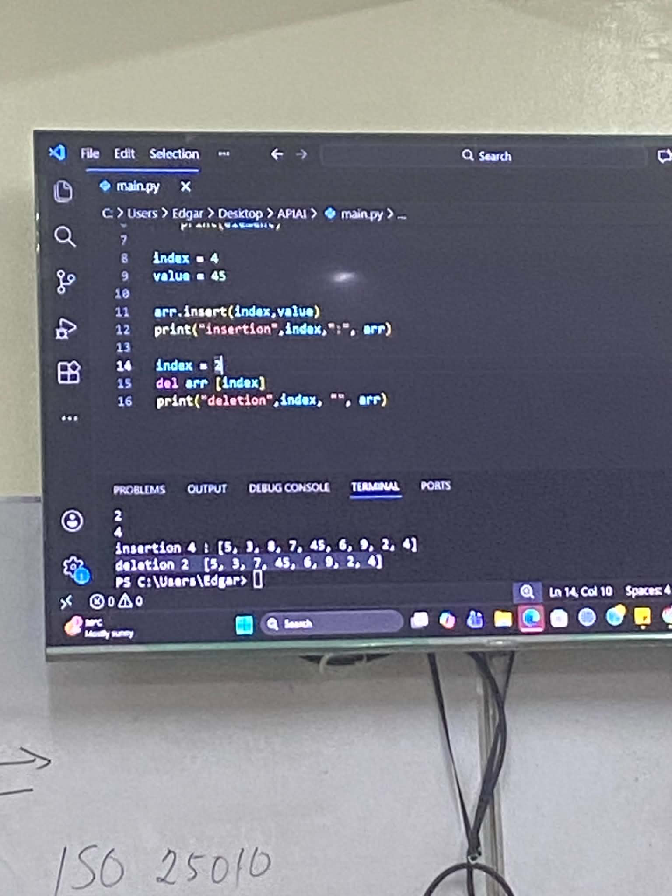
Data Structures & Algorithm
I've been aware that this subject was really hard, that's why i focused on just listening to our professor when he was teaching us about it. And when i go to home i got interested on the algorithms of data being transferred or altered, that's why i tried learning it on my own so i can catch up easily when our professor is teaching it.
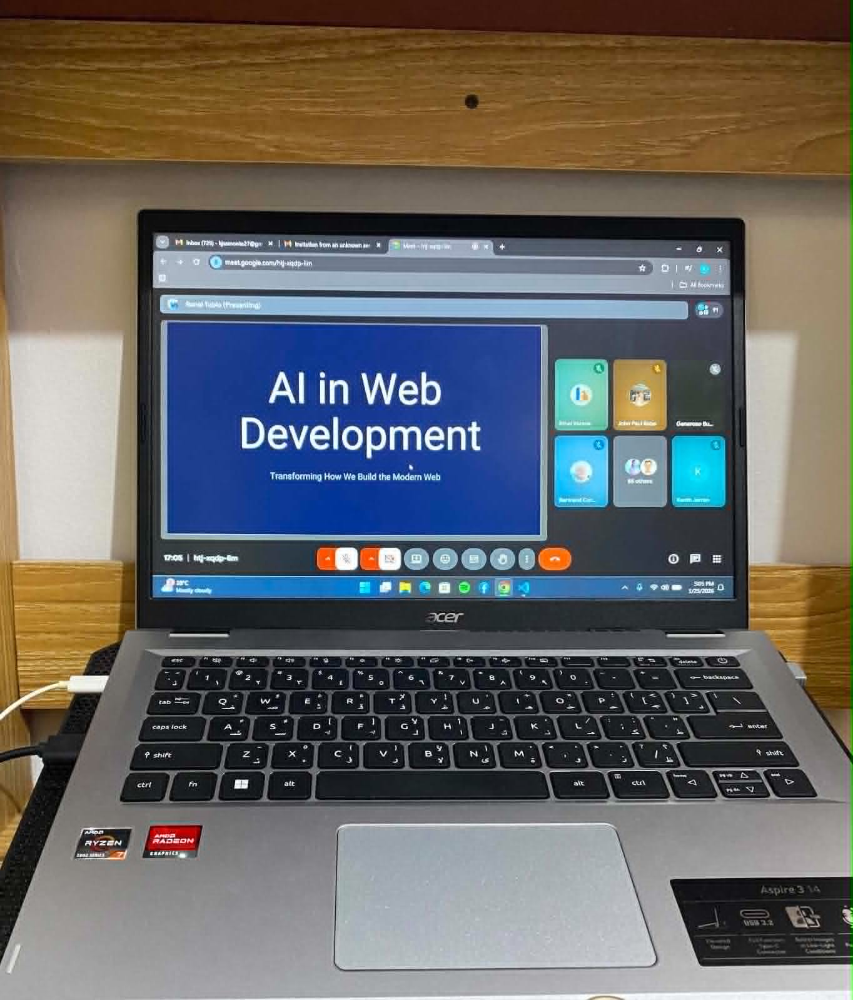
Seminars
I don't usually go to seminars, but when i saw online that there's a community sharing free seminar consisting programming courses with certifications, and i got interested so i decided to register until i enjoyed the experience.